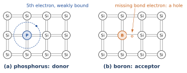
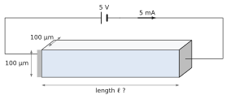
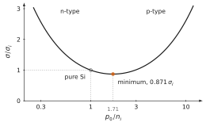
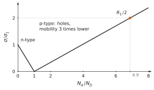

Bonds, electron–hole pairs and holes; generation and recombination, R=αnp and Gi=αni2; equilibrium and the mass-action law n0p0=ni2; donors and acceptors; the three laws for the doped sample: neutrality n0+NA=p0+ND, mass action, complete ionisation; majority and minority carriers; the conductivity σ=q(nμn+pμp) of Chapter 1. The Fermi level is not used in this set.
Data
Silicon at 300 K: ni=1010cm−3, μn=1350, μp=460 cm²/(V·s) unless a problem gives other values. Germanium: ni=2.4×1013cm−3; GaAs: ni=1.8×106cm−3.
Problem 2.1Which atom gives which carrier?A · Understanding
Adapted from Sze & Lee, Ch. 1, Problem 6, p. 41
A dopant is a donor or an acceptor according to the number of valence electrons it brings compared with the atom it replaces.
Silicon (column IV) is doped with phosphorus (column V), then with boron (column III). Draw the bonds around each impurity at 0 K and say which one is a donor.
Gallium arsenide is a compound of gallium (column III) and arsenic (column V). Tin (column IV) is added and replaces gallium atoms. Is tin a donor or an acceptor? Is the material n- or p-type?
Silicon atoms can also be added to GaAs. Explain why a silicon atom on a gallium site is a donor, and a silicon atom on an arsenic site an acceptor. (Problem 2.16 uses this.)
Hint
Count the electrons available for the four bonds of the site, and compare with the eight shared electrons of a complete set of bonds.
Show the short answer
(a) P donor, B acceptor; (b) donor, n-type; (c) one electron in excess on a Ga site, one missing on an As site.
Show the correction
(a) Phosphorus has five valence electrons. Four of them complete the four bonds with the neighbouring silicon atoms; the fifth is bound to the impurity only by a weak attraction (the hydrogen-like orbit of the chapter) and is freed at 300 K: phosphorus is a donor. Boron has three: one bond lacks an electron, and an electron from a neighbouring bond can fill it at 300 K, which leaves a hole that moves through the crystal: boron is an acceptor.
(b) On a gallium site, the atom must provide three electrons to the bonds with its four arsenic neighbours, just as gallium does. Tin has four: one is in excess, and is freed as in the case of phosphorus in silicon. Tin on a gallium site is a donor, and the material is n-type.
(c) The same counting: silicon (four electrons) on a gallium site (three needed) brings one electron too many, a donor; on an arsenic site (five needed) it brings one too few, an acceptor. The same atom can be either, depending on its site: such an impurity is called amphoteric.

A flattened picture of the silicon bonds at 0 K around a donor and an acceptor.
Problem 2.2Compensated samplesB · Guided calculation
Adapted from Neamen, Problems 4.34 and 4.39, pp. 151–152
Silicon at 300 K, complete ionisation.
Write the three laws for a sample containing ND donors and NA acceptors, and show that, when ND>NA, n0=2ND−NA+(2ND−NA)2+ni2.
Find n0 and p0 for: (i) ND=1015, NA=4×1015cm−3; (ii) ND=3×1016cm−3, NA=0; (iii) ND=NA=2×1015cm−3. Say in each case whether the sample is n-type, p-type or behaves as pure silicon.
A sample contains 2×1015 arsenic atoms and 1.2×1015 boron atoms per cm³. Find n0 and p0.
Boron is added to the sample of (c) until p0=4×1015cm−3. How many boron atoms per cm³ must be added? What is the new n0?
Hint
When ∣ND−NA∣≫ni the square root reduces to ∣ND−NA∣/2: the majority density is the net doping, and the minority density follows from mass action.
(a) Neutrality: n0+NA=p0+ND (all dopants ionised). Mass action: p0=ni2/n0. Substituting, n0−ni2/n0=ND−NA, that is n02−(ND−NA)n0−ni2=0, whose positive root is the formula given. For NA>ND the same steps give p0 with NA−ND in place of ND−NA.
(b) (i) NA−ND=3×1015≫ni: p-type, p0=3×1015cm−3 and n0=1020/3×1015=3.3×104cm−3. (ii) n-type, n0=3×1016cm−3, p0=3.3×103cm−3. (iii) ND−NA=0 and the formula gives n0=p0=ni=1010cm−3: the donors give their electrons to the acceptors, and the carriers are those of pure silicon. A perfectly compensated sample is not pure, however: its ionised impurities still scatter the carriers and lower the mobility.
(c) ND−NA=8×1014cm−3: n0=8×1014cm−3 and p0=1020/8×1014=1.25×105cm−3; n-type.
(d) Now p0=4×1015≫ni, so NA−ND=4×1015 and NA=6×1015cm−3. The sample already has 1.2×1015: 4.8×1015 boron atoms per cm³ must be added. Then n0=1020/4×1015=2.5×104cm−3. The type of a sample is set by the net doping, and each added acceptor first neutralises a donor.
Problem 2.3When ni is not negligibleB · Guided calculation
Adapted from Sze & Lee, Ch. 1, Problem 18, p. 42, and Neamen, Problem 4.45, p. 152
A germanium sample is doped with ND=2.5×1013cm−3 donors, fully ionised, at 300 K, where ni of germanium is taken as 2.5×1013cm−3. Why can the majority-carrier approximation n0≃ND not be used? Compute n0 and p0, and the error that the approximation would make on n0.
In another material, doped with ND=2×1014 and NA=1.2×1014cm−3, the electron density is measured: n0=1.1×1014cm−3. Using the neutrality and mass-action laws, find ni and p0.
In (b), check your result by verifying neutrality with the computed values.
Hint
In (b) eliminate p0 between the two laws: ni2=n02−n0(ND−NA).
Show the short answer
(a) n0=4.05×1013, p0=1.55×1013cm−3; the approximation underestimates n0 by 38 %; (b) ni=5.7×1013cm−3, p0=3.0×1013cm−3.
Show the correction
(a) The approximation requires ND≫ni; here they are equal, so the thermally created pairs are as numerous as the electrons given by the donors. With (ND/2)=1.25×1013: n0=1.25×1013+(1.25×1013)2+(2.5×1013)2=1.25×1013+2.80×1013=4.05×1013cm−3, and p0=ni2/n0=6.25×1026/4.05×1013=1.55×1013cm−3. The approximation n0=2.5×1013 would be 38 % too low, and would give p0=ni, which ignores the reduction of the minority carriers. Check: n0−p0=2.5×1013=ND.
(b) With p0=ni2/n0, neutrality n0=p0+ND−NA becomes ni2=n02−n0(ND−NA)=(1.1×1014)2−1.1×1014×0.8×1014=1.21×1028−0.88×1028=3.3×1027, so ni=5.7×1013cm−3 and p0=3.3×1027/1.1×1014=3.0×1013cm−3.
(c) n0+NA=1.1×1014+1.2×1014=2.3×1014 and p0+ND=0.3×1014+2×1014=2.3×1014: neutrality holds.
Problem 2.4Designing a resistorB · Guided calculation
Adapted from Neamen, Problem 5.51, p. 190
A silicon resistor must carry 5 mA under 5 V. Its cross-section is a square of 100 µm × 100 µm.
What resistance is required?
The silicon is n-type with ND=3×1014cm−3 and NA=0 (μn=1350 cm²/(V·s)). Compute the conductivity, neglecting the holes, and the length of the resistor. Check that neglecting the holes is justified.
The resistor is now made of compensated silicon, ND=3×1016 and NA=2.5×1016cm−3, in which the electron mobility, lowered by the many ionised impurities, is measured as 1000 cm²/(V·s). Compute n0, the conductivity and the new length.
The electron density is multiplied by 16.7 between (b) and (c). Is the length multiplied by the same factor? Explain.

The bar resistor (not to scale).Hint
R=L/(σA), so L=RσA.
Show the short answer
(a) 1 kΩ; (b) σ=0.0649 S/cm, L=64.9 µm; (c) n0=5×1015cm−3, σ=0.801 S/cm, L=801 µm; (d) no, 12.3, because of the lower mobility.
Show the correction
(a) R=5/5×10−3=1 kΩ.
(b) n0=ND=3×1014cm−3 and σ=qn0μn=1.602×10−19×3×1014×1350=0.0649 S/cm. With A=10−4 cm², L=RσA=103×0.0649×10−4=6.49×10−3 cm =64.9 µm. The holes: p0=1020/3×1014=3.3×105cm−3; their conductivity is 109 times smaller.
(c) n0=ND−NA=5×1015cm−3 (minority holes 2×104cm−3, negligible). σ=1.602×10−19×5×1015×1000=0.801 S/cm and L=103×0.801×10−4=8.01×10−2 cm =801 µm.
(d) The length is multiplied by 801/64.9=12.3, not 16.7: L∝σ=qn0μn, and the mobility fell from 1350 to 1000 cm²/(V·s). The compensating impurities do not contribute carriers but they do scatter them. The relation between doping and resistor length is therefore not linear.
Problem 2.5Is pure silicon the most resistive?B · Guided calculation
Adapted from Neamen, Problem 5.22, p. 187
The conductivity of silicon at 300 K is σ=q(n0μn+p0μp), with n0p0=ni2. Consider it as a function of p0.
Show that σ is smallest for p0=niμn/μp, and that the minimum is σmin=2qniμnμp.
Show that σmin/σi=2μnμp/(μn+μp), where σi is the conductivity of pure silicon, and evaluate the ratio. Compute ρi and ρmax.
Is the material at the minimum n- or p-type? What net doping NA−ND gives it?
Why does a small number of acceptors increase the resistivity of pure silicon?
Hint
Write σ(p0)=q(μnni2/p0+μpp0) and set dσ/dp0=0.
(a) dσ/dp0=q(−μnni2/p02+μp)=0 gives p02=ni2μn/μp, so p0=niμn/μp and n0=ni2/p0=niμp/μn. The second derivative is positive: it is a minimum. Then σmin=q(μnniμp/μn+μpniμn/μp)=2qniμnμp. With 1350/460=1.713, p0=1.71×1010cm−3.
(b) σi=qni(μn+μp), hence the ratio 2μnμp/(μn+μp)=2×788/1810=0.871. σi=1.602×10−19×1010×1810=2.90×10−6 S/cm, ρi=3.45×105 Ω·cm, and ρmax=ρi/0.871=3.96×105 Ω·cm.
(d) Adding acceptors replaces fast electrons by slow holes: mass action removes electrons (μn=1350) while adding holes (μp=460). As long as the electrons still carry a large share of the current, the loss outweighs the gain. Beyond the minimum, the holes become numerous enough for the conductivity to rise again.

The conductivity is smallest in slightly p-type material, because holes are less mobile than electrons.
Problem 2.6Halving a resistance by counter-dopingB · Guided calculation
Adapted from Sze & Lee, Ch. 2, Problem 9, p. 79
A silicon bar doped with ND≫ni donors has a resistance R1. Acceptors are then added to the same bar, NA>ND, and its resistance becomes R1/2. Take the mobilities constant, μn/μp=1350/460.
Write the conductivity before and after the addition of the acceptors.
Deduce NA in terms of ND.
Why must NA be several times larger than ND to halve the resistance, and not simply about 2ND?
Hint
After the addition the majority carriers are holes, and their density is the net doping NA−ND.
Show the short answer
(b) NA=(1+2μn/μp)ND=6.9ND.
Show the correction
(a) Before: σ1=qNDμn. After: holes are the majority carriers, p0=NA−ND, and σ2=q(NA−ND)μp (minority electrons negligible).
(b) R2=R1/2 means σ2=2σ1: (NA−ND)μp=2NDμn, so NA=ND(1+2μn/μp)=ND(1+5.87)=6.9ND.
(c) Two effects. First, ND acceptors only cancel the donors: the net doping is NA−ND. Second, the new carriers are holes, 2.9 times less mobile than the electrons they replace; twice the conductivity therefore needs 2×2.9=5.9 times more holes than there were electrons. In practice the mobility would also fall with the total number of ionised impurities, NA+ND, and even more acceptors would be needed.

Counter-doping: the conductivity first falls to almost zero at compensation, then rises slowly, carried by the less mobile holes.
Problem 2.7The generic recombination model in numbersB · Guided calculation
Adapted from Neamen, Problems 6.1 and 6.3, p. 233
In the generic model of the chapter, the recombination rate is R=αnp and thermal generation is Gi=αni2. In an n-type sample, an individual hole disappears at the rate αn0, so its mean lifetime is τp=1/(αn0).
A silicon sample has ND=1016cm−3 and a measured hole lifetime τp=20 µs. Find α, the thermal generation rate Gi and the equilibrium recombination rate R0.
What is the mean time that an electron of this sample waits before recombining? Comment on the difference between the two lifetimes.
Another sample has ND=5×1015cm−3 and τp=0.2 µs. Find α and R0. Why is R0 the same as Gi in each sample, whatever τp?
(a) α=1/(τpn0)=1/(2×10−5×1016)=5×10−12 cm³/s. Gi=αni2=5×10−12×1020=5×108 pairs/(cm³·s). At equilibrium R0=αn0p0=αni2=Gi.
(b) An electron recombines with a hole; it meets one at the rate αp0=5×10−12×104=5×10−8 s−1, so it waits 1/(αp0)=2×107 s, about eight months. The two lifetimes differ by n0/p0=1012: a hole is surrounded by electrons and is soon captured; an electron finds a hole only rarely. Yet the numbers of recombinations per second are the same for both carriers, because each recombination removes one of each: n0/τn=p0/τp=R0.
(c) α=1/(2×10−7×5×1015)=10−9 cm³/s and R0=Gi=αni2=1011 cm−3s−1. In equilibrium, generation and recombination balance by definition; the value of α, which depends on the impurities and defects of the sample, fixes how fast pairs are created and destroyed, but not their balance. A shorter lifetime means a faster exchange, not a different equilibrium.
Problem 2.8Broken bondsB · Guided calculation
From the course notes, Chapter 2
Germanium has 4.4×1022 atoms per cm³. How many bonds per cm³? What fraction of them is broken at 300 K (ni=2.4×1013cm−3)? Compare with silicon.
Show the short answer
Bonds: 4.4×1022×4/2=8.8×1022cm−3. Fraction broken: 2.4×1013/8.8×1022=2.7×10−10, which is 2700 times larger than in silicon (1010/1023=10−13): the gap is smaller.
Problem 2.9Intrinsic resistivitiesB · Guided calculation
From the course notes, Chapter 2
Compute the resistivity of pure germanium, silicon and gallium arsenide with Tables 2.3 (reference value for Si) and 2.4. In each case, what fraction of the current do the electrons carry?
Problem 2.10The generic balanceB · Guided calculation
From the course notes, Chapter 2
In silicon take α=10−11 cm³/s (an effective value; Chapter 4 discusses it). (i) Find the thermal generation rate Gi. (ii) A sample doped with ND=1016cm−3 has n0=1016cm−3: under the assumptions of Section 2.11, find p0 and the recombination rate R0. (iii) Compute the lifetime 1/(αp0) of an individual electron and 1/(αn0) of an individual hole in this sample, and comment.
Show the short answer
(i) Gi=αni2=10−11×1020=109cm−3s−1. (ii) p0=ni2/n0=104cm−3 and R0=αn0p0=109cm−3s−1=Gi: the same rate as in the pure material. (iii) Electron: 1/(10−11×104)=107 s, about four months; hole: 1/(10−11×1016)=10−5 s = 10 µs. A majority electron waits a very long time for a rare hole; a minority hole is surrounded by electrons and disappears quickly. Chapter 4 shows that the second time governs the return to equilibrium.
Problem 2.11The hydrogen-like model elsewhereB · Guided calculation
From the course notes, Chapter 2
Estimate the ionisation energy and the orbit radius of a donor in germanium (εr=16, m∗=0.12m0) and in gallium arsenide (εr=13.1, m∗=0.067m0). Compare with kT at 77 K and at 300 K. Measurement gives about 12 meV for phosphorus in germanium: comment.
Show the short answer
Ge: Ed≈13.6×0.12/256=6.4meV, ad≈0.053×16/0.12=7.1 nm. GaAs: Ed≈13.6×0.067/171.6=5.3meV, ad≈10 nm. Both are comparable to kT at 77 K (6.6 meV) and four to five times smaller than at 300 K: donors stay ionised down to very low temperatures. The 12 meV measured in Ge: the model still gives the order of magnitude, the core of the impurity does the rest.
Problem 2.12p-type siliconB · Guided calculation
From the course notes, Chapter 2
Silicon is doped with NA=2×1016cm−3 (boron). How many silicon atoms per boron atom? Find p0, n0 and the resistivity. Is the majority approximation justified?
Show the short answer
5×1022/2×1016=2.5×106 Si atoms per boron atom. p0≃2×1016cm−3, n0=1020/2×1016=5×103cm−3, ρ=1/(1.6×10−19×2×1016×460)=0.68Ω⋅cm. NA=2×106ni≫10ni: the approximation is amply justified.
Problem 2.13Lightly dopedB · Guided calculation
From the course notes, Chapter 2
An n-type sample has ND=1.5×1010cm−3. Why can the majority approximation not be used? Find n0 and p0 with the exact formula, and the error the approximation would have made.
Show the short answer
ND=1.5ni is not ≥10ni. Exact: n0=0.75×1010+0.5625×1020+1020=2.0×1010cm−3, p0=1020/2×1010=5×109cm−3. Check: n0−p0=1.5×1010=ND. The approximation would have given n0=1.5×1010, an error of 25%.
Problem 2.14CompensationB · Guided calculation
From the course notes, Chapter 2
An n-type silicon wafer (ND=3×1016cm−3) receives NA=2×1016cm−3 boron atoms. (i) Find n0, p0 and the resistivity, keeping the mobility μn=1350 cm²/(V·s). (ii) What happens to n0 and p0 if exactly NA=3×1016cm−3 is added? (iii) Which assumption on the mobility is questionable?
Show the short answer
(i) n0≃ND−NA=1016cm−3, p0=104cm−3, ρ=1/(1.6×10−19×1016×1350)=0.46Ω⋅cm. (ii) ND=NA: neutrality gives n0=p0, so n0=p0=ni: the sample behaves as pure silicon (perfect compensation, impossible to achieve in practice). (iii) The 5×1016 dopant ions per cm³ scatter the carriers: the real mobility is lower than in the pure crystal, and the resistivity higher (outside the model).
Problem 2.15Purity requirementB · Guided calculation
From the course notes, Chapter 2
We want ‘pure’ silicon to have, at 300 K, an electron concentration that exceeds ni by at most 1%. What concentration of residual donors can be tolerated? To how many silicon atoms per foreign atom does this correspond? Comment.
Show the short answer
For ND≪ni, n0≈ni+ND/2; n0≤1.01ni requires ND≤0.02ni=2×108cm−3, that is one foreign atom per 2.5×1014 silicon atoms. This is beyond what the best purification achieves (residual levels of a few 1011 to 1012cm−3): ‘intrinsic’ silicon at 300 K is an ideal, and the resistivity of 3.4×105Ω⋅cm is not measured in practice.
Challenge: a new situation
These problems apply the method of the chapter to a device, a material or a situation that the chapter did not treat. The reasoning does not change: state the physical picture, choose the model, compute, check.
Problem 2.16An impurity that is both donor and acceptorC · Synthesis
Adapted from Neamen, Problem 4.62, p. 154
Silicon is added to gallium arsenide at a concentration of 7×1015cm−3. Five percent of the silicon atoms replace gallium atoms and 95 percent replace arsenic atoms (Problem 2.1). All are ionised. GaAs at 300 K: ni=1.8×106cm−3.
Find ND and NA. Is the material n- or p-type?
Find p0 and n0.
The value of n0 is far below one electron per cm³. What does such a density mean physically, and is the mass-action law still meaningful?
Compare with silicon doped with the same net doping. Why is the minority density so much smaller in GaAs?
(a) ND=0.05×7×1015=3.5×1014cm−3 (Si on Ga sites), NA=0.95×7×1015=6.65×1015cm−3 (Si on As sites). NA>ND: p-type.
(b) p0=NA−ND=6.3×1015cm−3, and n0=ni2/p0=(1.8×106)2/6.3×1015=5.1×10−4cm−3.
(c) It means that a cubic centimetre contains one electron in the conduction band only 5×10−4 of the time on average, or that one electron is present, on average, in a volume of about 2000 cm³. The mass-action law still holds as a statement about averages: in a large sample observed over a long time, the rate of generation αni2 is balanced by the recombination αn0p0. In a device it means that the minority electrons play no role in this region unless they are injected.
(d) For silicon, n0=1020/6.3×1015=1.6×104cm−3. The ratio is (ni,Si/ni,GaAs)2=(1010/1.8×106)2=3×107: the larger gap of GaAs makes thermal pairs much rarer, and minority densities scale as ni2.